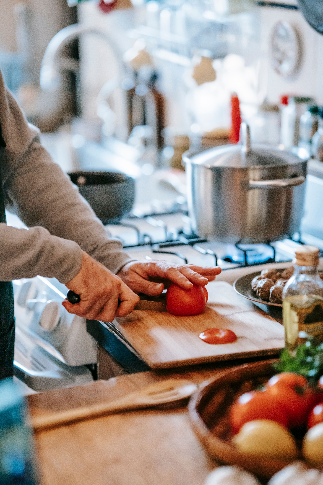
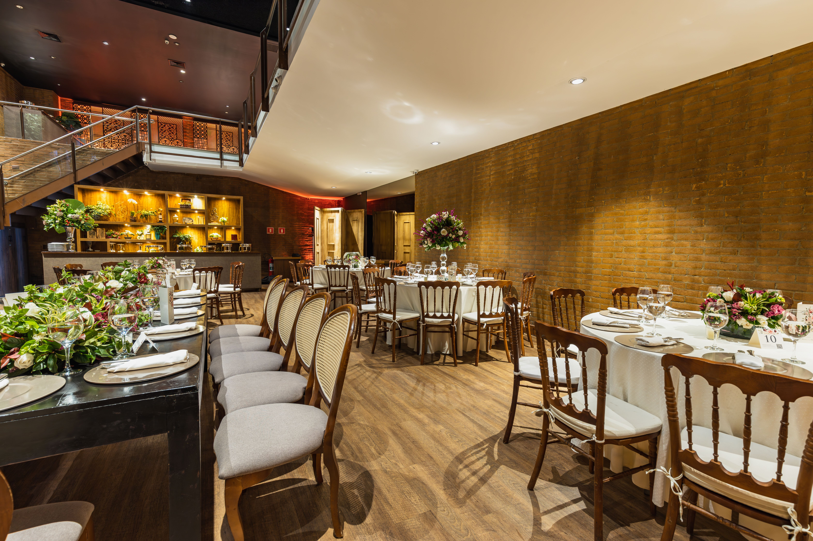

Receitas
Preparações explicadas de um jeito simples para testar em casa e aprender técnicas novas de cozinha.
Desenvolvemos o Portal Gastronômico para ser um guia prático para quem gosta de cozinhar ou quer conhecer lugares novos. No site, a gente traz dicas de receitas, faz reviews sinceros de estabelecimentos locais e ainda pesquisa sobre a origem e as curiosidades dos alimentos. Você pode navegar pelos nossos principais conteúdos clicando nas fotos do feed abaixo.

Preparações explicadas de um jeito simples para testar em casa e aprender técnicas novas de cozinha.

O que a gente achou das visitas aos locais da região, cobrindo o preço, o atendimento e se o prato vale a pena.

Postagens sobre o lado histórico da culinária, mostrando como os hábitos alimentares mudaram ao longo do tempo.